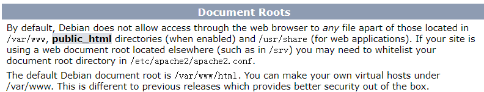

Former mentiened server: Apache2, requires you to put your files in the directory var/www folder

but if you use this: 

It will host under any directory
another common way to extract files on a windows machine or send files over is to host up an FTP server
You can download an FTP server and make it work
Or, you can do it like this
install python ftp server first

then run it like this:


should be like this, but somehow my computer can't use ftp:// at the front of the url